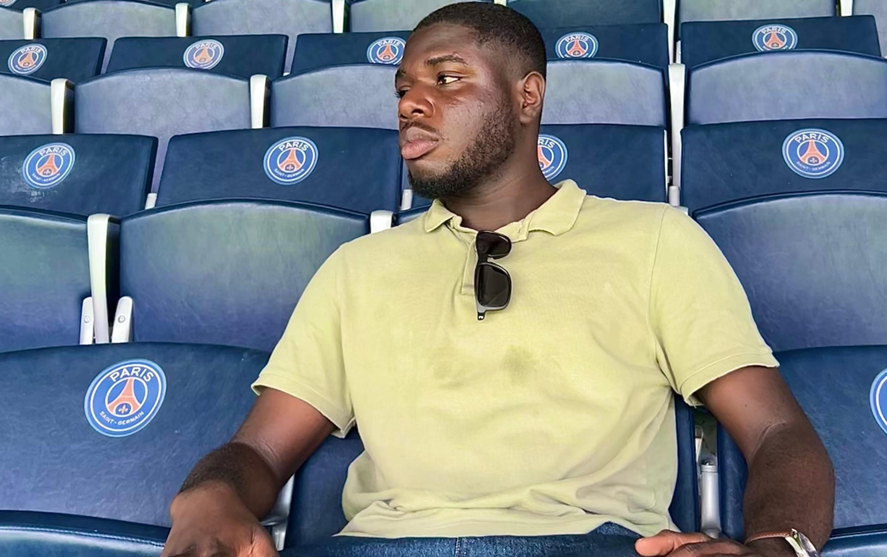
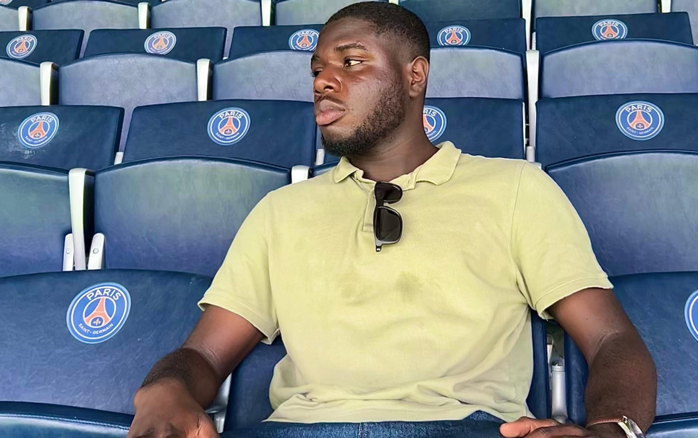
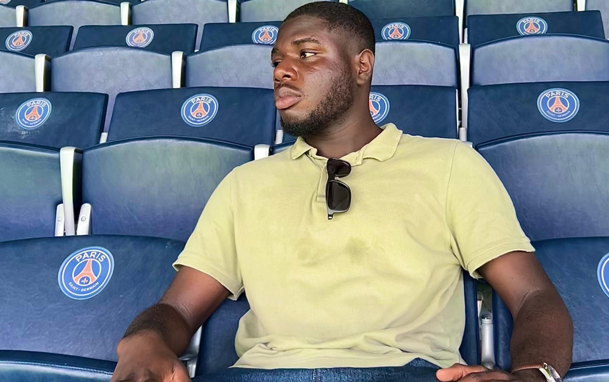

Football
Championnat universitaire, Coupe de France et Tournoi Saint‑Gobain. Lecture du jeu, coordination et gestion du rythme.
 

Football universitaire (EDHEC FC) et golf : discipline, stratégie et précision.
Championnat universitaire, Coupe de France et Tournoi Saint‑Gobain. Lecture du jeu, coordination et gestion du rythme.

Sport d’analyse et de précision : anticipation, évaluation du risque et contrôle du tempo.